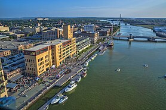

Green Bay
Site Navigation:
Wisconsin
Madison
Milwaukee
Green Bay
Facts About Green Bay
Location: Eastern Wisconsin
Population: 106,000
Incorporated: 1854
City-type: Urban
Median Household Income: $55,000
$12,000 less than the state median

Please check out this
Wikipedia article
for more information on Green Bay.